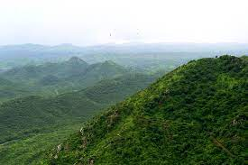

RAJASTHAN
TOURISM

We here the represntatives of RAJASTHAN welcomes you all to our creation "RAJASTHAN ART GALLERY ". It is one of the biggest states of India. It has rich and unique culture. People of Rajasthan are uniquely dressed up . Their eating and celebrations are quite different from the other part of country
LOCATION
Rajasthan is located in northwestern India, bounded on the west and northwest by Pakistan and shares domestic borders with the states of Punjab, Haryana, Uttar Pradesh, Madhya Pradesh and Gujarat. With a land area of 342,239 sq km, Rajasthan is the largest state in India geographically.
GEOGRAPHY
 The geographic features of Rajasthan are the Thar Desert and the Aravalli Range, which runs through the state from southwest to northeast, almost from one end to the other, for more than 850 kilometres. Mount Abu lies at the southwestern end of the range, separated from the main ranges by the West Banas River. Although a series of broken ridges continues into Haryana in the direction of Delhi where it can be seen as outcrops in the form of the Raisina Hill and the ridges farther north. About three-fifths of Rajasthan lies northwest of the Aravalklis, leaving two-fifths on the east and south direction.
HISTORY
Ancient times
Parts of what is now Rajasthan were partly part of the Vedic Civilisation and the Indus Valley civilization. Kalibangan, in Hanumangarh district, was a major provincial capital of the Indus Valley Civilization Topsfield writes that the Rajputs first entered India from the north west in the first millennium A.D. They established
kingdoms in western India in the region that is now known as Rajasthan.
A archaeological excavation at the Balathal site in Udaipur district shows a settlement contemporary with the Harrapan civilisation dating back to 3000–1500 BCE.
Stone Age tools dating from 5,000 to 200,000 years were found in Bundi and Bhilwara districts of the state.
The Matsya kingdom of the Vedic civilisation of India is said to roughly corresponded to the former state of Jaipur in Rajasthan and included the whole of Alwar with portions of Bharatpur.The capital of Matsya was at Viratanagar (modern Bairat), which is said to have been named after its founder King Virata.
identifies the two districts of Jhunjhunu and Sikar and parts of Jaipur district along with Haryana districts
of Mahendragarh and Rewari as part of Vedic state of Brahmavarta. Bhargava also locates the present day Sahibi River
as the Vedic Drishadwati River, which along with Saraswati River formed the borders of the Vedic state of Brahmavarta.
Manu and Bhrigu narrated the Manusmriti to a congregation of seers in this area. The ashrams of Vedic
seers Bhrigu and his son Chayvan Rishi, for whom Chyawanprash was formulated, were near Dhosi Hill,
part of which lies in Dhosi village of Jhunjhunu district of Rajasthan and part of which lies in Mahendragarh
district of Haryana.